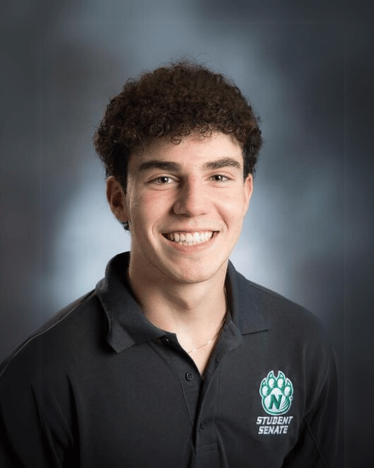

- Born and raised in Joplin Missouri
- Graduated from Mcauley Catholic High School with a special interest in websites and design
- Currently attending Northwest Missouri State with a major in Digital Media and Public Relations.
- I am involved in Student Senate and Sigma Tau Gamma
- I serve as the PR chair for these organizations, and focus on social media strategies.